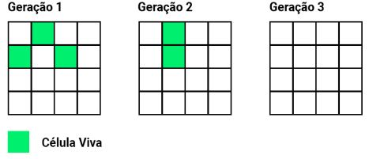
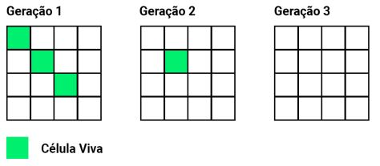
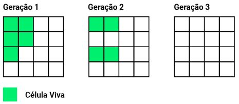
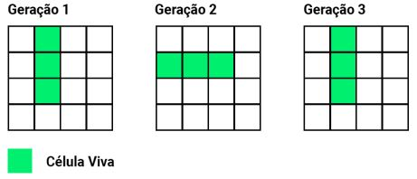

Texto fornecido pela Rota das Oficinas para a etapa de teste de programação.
O jogo da vida é um autómato celular desenvolvido pelo matemático britânico John Horton Conway em 1970. É o exemplo mais bem conhecido de autômato celular. O jogo foi criado de modo a reproduzir, através de regras simples, as alterações e mudanças em grupos de seres vivos, tendo aplicações em diversas áreas da ciência. As regras definidas são aplicadas a cada nova "geração" a partir de um tabuleiro bi-dimensional definido pelo jogador.
- Qualquer espaço vazio com exatamente três vizinhos vivos se torna uma célula viva. Ex:
- Qualquer célula viva com menos de dois vizinhos vivos morre de solidão. Ex:
- Qualquer célula viva com mais de três vizinhos vivos morre de superpopulação. Ex:
- Qualquer célula viva com dois ou três vizinhos vivos continua viva para a próxima geração. Ex:
